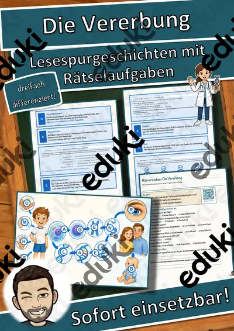
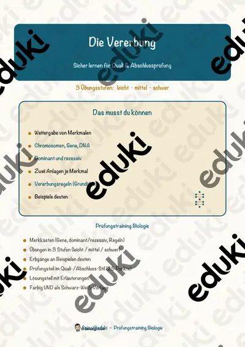
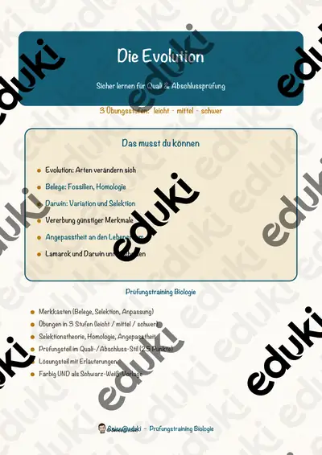

Genetik und Evolution: Arbeitsblätter für Klasse 8–10 (Biologie)
Genetik und Evolution erklären Vielfalt und Verwandtschaft. In Klasse 8 bis 10 geht es um Vererbung, DNA und die Entwicklung der Arten.
Gearbeitet wird in der Regel an DNA, Gene und Vererbung, ergänzt um Mendel, Evolution und Darwin.
Die Lehrpläne der Länder sehen das Thema im Fach Biologie vor, in der Regel in der Sekundarstufe I (Klasse 8–10). Als Ziel gilt: die Jugendlichen erklären Vererbungsregeln und Mechanismen der Evolution.
Wer Genetik und Evolution auf mehrere Stunden verteilt, startet mit DNA, übt an Vererbung und schließt mit Evolution ab. Alle Blätter sind kopierfertig und enthalten Lösungen für die schnelle Kontrolle. Leistungsstarke und schwächere Lesende erhalten über die Lesespurgeschichten Texte in drei Stufen.
5 passende Materialien stehen bereit, etwa Gentechnik, Die DNA und Die Vererbung. Vertreten sind 3 Lesespurgeschichten und 2 Prüfungstrainings; die Stufen reichen über Klasse 9–10. Eine Kreuzungstabelle zu einfachen Merkmalen macht Wahrscheinlichkeiten nachvollziehbar.
Das gehört zum Thema
Passende Arbeitsblätter und Materialpakete

Gentechnik – Chancen und Risiken abwägen – Lesespurgeschichte mit Rätselaufgaben (Klasse 10)

Die DNA – Lesespurgeschichte mit Rätselaufgaben (Klasse 9)

Die Vererbung – Lesespurgeschichte mit Rätselaufgaben (Klasse 9)

Die Vererbung – Prüfungstraining Biologie (Klasse 9)

Die Evolution – Prüfungstraining Biologie (Klasse 9)
Häufige Fragen
Für welche Klassenstufe passen die Arbeitsblätter zu Genetik und Evolution?
Der Schwerpunkt liegt auf Klasse 9; insgesamt deckt die Auswahl (5 Titel) Klasse 9–10 ab. In der Beschreibung jedes Materials steht die empfohlene Stufe.
Welche Inhalte decken die Materialien zu Genetik und Evolution ab?
Die Materialien arbeiten an DNA, Gene und Vererbung und gehen dann weiter zu Mendel, Evolution und Darwin. Vorab lohnt ein Blick in den Lehrplan des eigenen Bundeslandes.
Wie setze ich Genetik und Evolution im Unterricht ein?
Eine Kreuzungstabelle zu einfachen Merkmalen macht Wahrscheinlichkeiten nachvollziehbar. So entsteht aus den Blättern eine kleine Einheit, die sich auf zwei bis drei Stunden verteilen lässt.
Mehr Material nach Fach und Klasse
Verwandte Lehrplanthemen
- Sucht, Drogen und Prävention (Biologie, Klasse 7–10)
- Atmung, Verdauung und Organe (Biologie, Klasse 5–9)
- Fische und Meerestiere (Biologie, Klasse 4–8)
- Fotosynthese (Biologie, Klasse 5–9)
- Herz und Blutkreislauf (Biologie, Klasse 5–9)